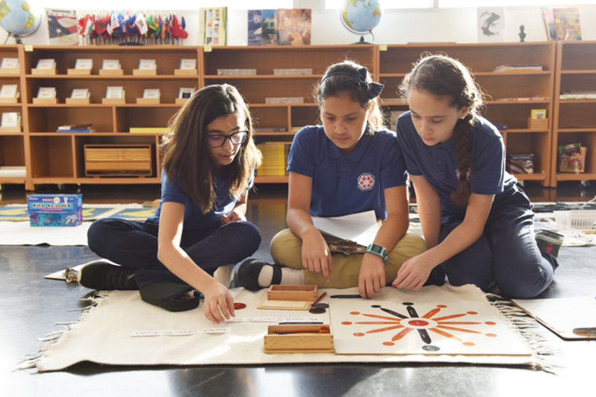

Home › Planes of Development › Second Plane
6–12 years · The reasoning mind
The Second Plane
In the second plane of development, the child leaves the Sensorial Absorbent Mind behind and acquires the Mind of Reason. It is a stage of stability, imagination and abstraction — and of a deep new interest in the how and the why of things.
In the second period the child needs wider boundaries for his social experiences. Development cannot result by leaving him in his former environment.
Montessori, Maria. From Childhood to Adolescence (p. 10).
During this period, from 6 to 12 years, clear changes can be noticed in the child's body — one of the most visible being the milk teeth falling out and being replaced by permanent ones. The body grows, the limbs lengthen, and the fragile health of the first plane gives way to greater resistance and fewer illnesses.
The way the child thinks also changes: from the concrete to the abstract. Children can now use imagination to develop abstract concepts and ideas that were not possible before. They can clearly distinguish reality from fantasy — and in Montessori schools we still prefer to ground children in reality, while always appealing to their imagination and their capacity for abstraction.
Now he is interested mainly in the how and the why. All that used to attract him sensorially now interests him from a different point of view. He is looking for what needs to be done — he is beginning to become aware of the problem of cause and effect.
Montessori, Maria. From Childhood to Adolescence (p. 17).

Sensitive Periods
As the second plane is a period of more abstract things, so are its sensitive periods. The external order of the first plane is gone — now order lives inside the child's mind. The main sensitive periods of this plane are:
Justice and moral judgment
The child has a strong need to define what is right and what is wrong, and a great need for justice according to established rules. They test the rules — to see whether they really are the rules and whether others know them too. One of the most common phrases at this stage is "that's not fair."
It is at this age also that the concept of justice is born, simultaneously with the understanding of the relationship between one's acts and the needs of others.
Montessori, Maria. From Childhood to Adolescence (p. 13).
Social relationships
Children begin to understand friendship and social relationships. They come together in groups to work, study and have fun, and prefer being in groups to being alone. Educators must ensure these relationships develop naturally, but also with respect and care for others.
An interesting fact to be observed in the child of six is his need to associate himself with others… He likes to mix with others in a group wherein each has a different status. A leader is chosen, and is obeyed, and a strong group is formed.
Montessori, Maria. To Educate the Human Potential (p. 11).
Money and economic value
Children develop a great interest in money — how it works and why. They are drawn less to having money than to the conceptual questions it involves: the value of a product, how much can be bought with a unit of currency, how different societies generate and use money.
The abstract use of imagination
Children now have a great capacity for abstraction. They can imagine what is described to them and apply it to concrete situations, going beyond what is physically present — reasoning about economics, time, feelings and other abstract topics.
Now the child must have constant recourse to his imagination. Imagination is the great power of this age. Since we are unable to present everything, it is up to the child to use his imagination.
Montessori, Maria. From Childhood to Adolescence (p. 27).
The use of tools and machines
They want to know how machines and tools work, what they are for, and the role they play in society — the car, television, rockets, airplanes, tractors, computers — and how different cultures have been shaped by them.
The machines must be of suitable size so that the children can take them down and reassemble them, also use and repair them.
Montessori, Maria. From Childhood to Adolescence (pp. 89–90).
A sense of history and time
Children develop a great interest in how time works — how it has passed, what each culture has done through the ages, what existed before humankind, and how humanity built everything that exists today, with all its interdependencies.
A sense of human culture and belonging
Closely related to history and time: how human culture was built and developed, what it is like in each part of the globe, and what roles exist within a family. These questions fascinate a child who is seeking answers to the whys and hows.
A sense of how the world works
An interest in how things function in the universe — in the physical, chemical and scientific sense. What is gravity, electrical energy, the life cycles, the forces of motion? These big topics deeply engage children who are trying to understand how the world and life work.
Human Tendencies
In this plane, the human tendencies influence the child differently from the first plane:
How lessons are given in this plane
See how the three-period lesson adapts to the older child, through key lessons and stories.